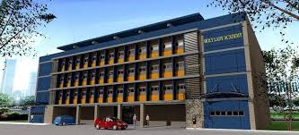
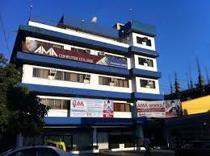

I am eco, a 24-year-old BS Computer Engineering graduate from Adamson University. I am seeking an entry-level position related to Hardware and Software Engineering, bringing a blend of experiences in Networks, System Admin, IBM System Engineer (AIX, IBMI, RHEL, WINDOWS), Web Development (HTML, CSS, JS, React, NodeJS) Video Editing, Machine Learning, and Logic Design, among others. Growing up as the middle child with two sisters, I have grasped the importance of collaboration and adaptability. In addition to my academic, while on college I work as a freelance video editor, refining my skills in Motion FX, Text Animation, Camera Tracking, Thumbnails, Logo Animations (Intro/Outro), and more. My leadership abilities are evident in my involvement in working with Logical Circuits and designs for thesis and school projects. Furthermore, I have gained practical exposure to machine learning and networking through subjects such as 'COMPUTER NETWORK AND SECURITY', successfully passing the CISCO exam online and an Ongoing process of learning Full Stack Web Development Course Online. Currently, I am dedicated to Mastering Full Cycle Engineering (Full-Stack / DevOps) and become a proficient Software Engineer.
- ABOUT -
- Education -

THE HOLY LADY ACADEMY
- HIGHSCHOOL GRADE 7 - 10
- GRADE 12 SENIOR HIGH-SCHOOL
- SENIOR HIGH GRADUATE - BEST IN COMPUTER AWARD
Address: 4 Front Network Avenue, Meralco Village, Marilao, 3019, Bulacan

AMA COMPUTER COLLEGE
- GRADE 11 SENIOR-HIGHSCHOOL
Address: MX5H+328, Caimito Road, Samson Rd, Caloocan, Metro Manila
ADAMSON UNIVERSITY
- COLLEGE 1ST YEAR TO 4THYEAR
- GRADUATE - BS Computer Engineering